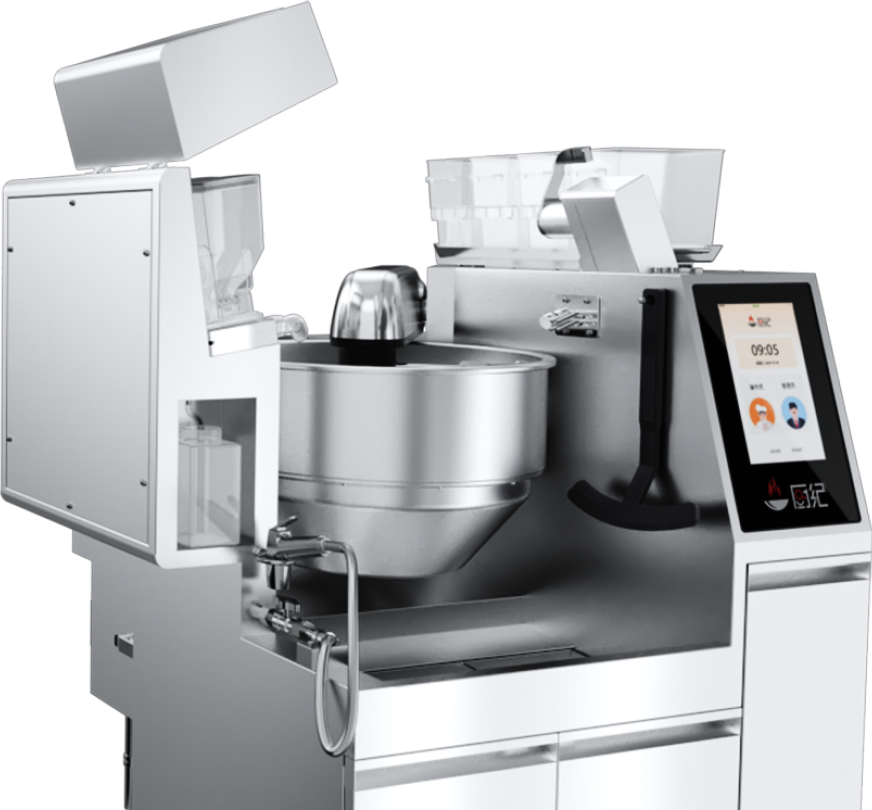

厨房智能硬件 / 国家政策
商用智能炒菜机国标实施，设备比较有了共同参照
GB/T 46718-2025 于 11 月 1 日实施，关注点从功能演示延伸到可核对的技术依据。

国家标准全文公开系统显示，《商用智能炒菜机》GB/T 46718-2025 已于2026年11月1日实施，当前状态为“现行”。该标准由国家市场监督管理总局、国家标准化管理委员会发布，主管和归口部门均为中国轻工业联合会。
这是2025年10月31日发布的推荐性国家标准，本次新闻节点是实施日期到来。它面向商用智能炒菜机；不能据此认定所有家用炒菜产品都已符合要求，也不能把企业参与起草等同于产品获得认证。
国家标准全文公开系统 · 2025-10-31 发布；2026-11-01 实施拓邦厨纪官网 · 既有产品资料；11月2日访问实施节点：11月1日；发布节点：2025年10月31日。具体技术条款请以标准全文为准。